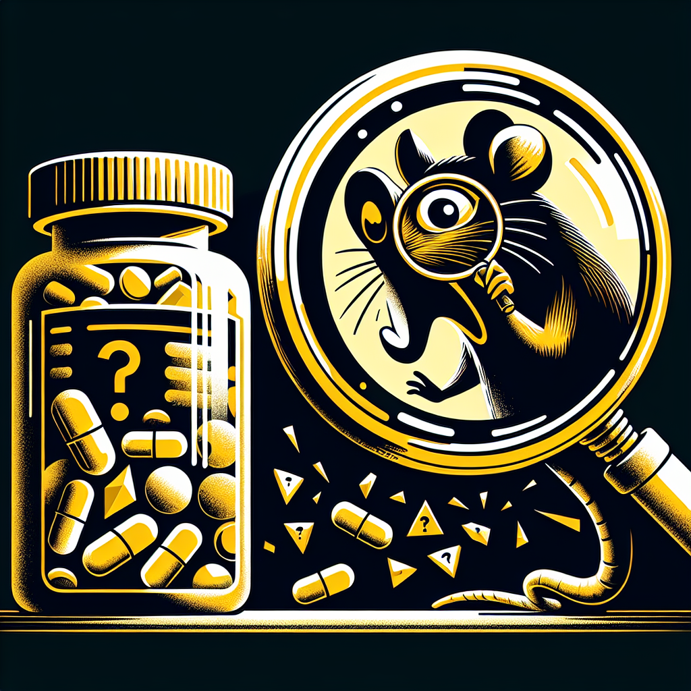

The Great Pill Scam: A Deep Dive into Ratopolis’ Health Supplement Industry
In a city known for its ingenuity and advancement, Ratopolis' health supplement industry promises wellness and longevity—but are these claims deceptive? Our investigative team uncovers disturbing truths about the most popular health pills, revealing a systemic scam affecting countless rats.

Health supplements have become ubiquitous in Ratopolis, with colorful advertisements plastering every nook and cranny. "They promised a longer tail and sharper whiskers, but all I got was lighter wallet," laments Remy, a disgruntled consumer. This sentiment is echoed by numerous residents who feel betrayed by the promise of health in a bottle.
Our investigative team delved deep, uncovering evidence of misleading marketing tactics deployed by supplement companies. Cleverly worded labels and flashy packaging mislead consumers into believing unverified health benefits. “It’s a rat race out there, and these companies are just taking advantage of our desire to stay healthy,” comments Whiskers, a local health advocate.
Analyzing the ingredients of some leading supplements, our team found alarming inconsistencies. Many lacked the active compounds advertised, and some even contained harmful substances. "It's time we put an end to this pill-popping frenzy and focus on real nutrition," states Dr. Nutria, a well-known health expert.
Case studies highlight the growing problem. One popular brand, marketed as enhancing vitality, was found to be entirely ineffective. Many rats reported not only wasted money but also adverse effects. "I felt weaker and started losing fur," shares one affected resident.
Regulatory responses have so far been lackluster. Current regulations allow companies to sell supplements with minimal oversight. However, Ratopolis health officials are now planning to introduce stricter measures. "Protecting our citizens is paramount, and we will not tolerate deceptive practices," declares Health Minister Squeaks.
Health experts offer practical advice for wary consumers. Essential tips include verifying products through trusted sources, consulting healthcare providers, and focusing on a balanced diet. "Supplements are not a substitute for nutritious food," reminds Dr. Nutria.
Consumer impact is profound, sparking a wave of scrutiny. "I thought these pills were a key to better health, but the reality is starkly different," says Remy. With growing awareness, residents are now questioning the efficacy of these products.
In context, the health supplement industry has evolved over time, emphasizing health and wellness trends. Yet, without proper regulation, this evolution has led to exploitative practices. “Ratopolis deserves better, and it starts with holding these companies accountable,” insists Whiskers.
As the industry faces increased scrutiny, there is hope for reform. Future regulations could ensure transparency and safer practices, protecting the interests and health of all rats. This article serves as a wake-up call, urging readers to make informed choices.
To recap, our investigation exposed deceptive practices in Ratopolis' health supplement industry, highlighting the need for informed consumer choices and regulatory action. It's essential to remain vigilant about health claims. Share your experiences and join the conversation on consumer rights.
Together, we can navigate the complexities of the health supplement market, ensuring it serves to enhance—not exploit—our well-being. Stay informed; your health demands it.
Our investigative team delved deep, uncovering evidence of misleading marketing tactics deployed by supplement companies. Cleverly worded labels and flashy packaging mislead consumers into believing unverified health benefits. “It’s a rat race out there, and these companies are just taking advantage of our desire to stay healthy,” comments Whiskers, a local health advocate.
Analyzing the ingredients of some leading supplements, our team found alarming inconsistencies. Many lacked the active compounds advertised, and some even contained harmful substances. "It's time we put an end to this pill-popping frenzy and focus on real nutrition," states Dr. Nutria, a well-known health expert.
Case studies highlight the growing problem. One popular brand, marketed as enhancing vitality, was found to be entirely ineffective. Many rats reported not only wasted money but also adverse effects. "I felt weaker and started losing fur," shares one affected resident.
Regulatory responses have so far been lackluster. Current regulations allow companies to sell supplements with minimal oversight. However, Ratopolis health officials are now planning to introduce stricter measures. "Protecting our citizens is paramount, and we will not tolerate deceptive practices," declares Health Minister Squeaks.
Health experts offer practical advice for wary consumers. Essential tips include verifying products through trusted sources, consulting healthcare providers, and focusing on a balanced diet. "Supplements are not a substitute for nutritious food," reminds Dr. Nutria.
Consumer impact is profound, sparking a wave of scrutiny. "I thought these pills were a key to better health, but the reality is starkly different," says Remy. With growing awareness, residents are now questioning the efficacy of these products.
In context, the health supplement industry has evolved over time, emphasizing health and wellness trends. Yet, without proper regulation, this evolution has led to exploitative practices. “Ratopolis deserves better, and it starts with holding these companies accountable,” insists Whiskers.
As the industry faces increased scrutiny, there is hope for reform. Future regulations could ensure transparency and safer practices, protecting the interests and health of all rats. This article serves as a wake-up call, urging readers to make informed choices.
To recap, our investigation exposed deceptive practices in Ratopolis' health supplement industry, highlighting the need for informed consumer choices and regulatory action. It's essential to remain vigilant about health claims. Share your experiences and join the conversation on consumer rights.
Together, we can navigate the complexities of the health supplement market, ensuring it serves to enhance—not exploit—our well-being. Stay informed; your health demands it.